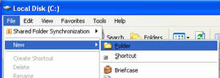
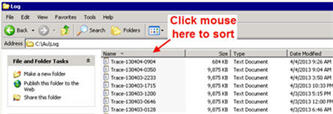
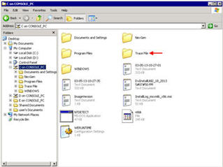

Using Debug Analyzer During Troubleshooting
This procedure describes how to Use the Debug Analyzer macro to analyze DxI trace files.
Perform this procedure when troubleshooting intermittent sample, incubator, wash, or dual-gantry pick-and-place errors.
Note: For troubleshooting information, refer to the
P&P: Troubleshooting Pick-and-Place Errors procedure.
-
Locate and save the trace file or files with pick-and-place errors.
-
Review the Event Log for errors (pick-and-place errors).
- On the DxI user interface, select the Event Log screen.
- Select an error message (pick-and-place error), and then select Details button.
- Write down the information from the Date/Time field. This date and time is the date and time the error occurred. (example: Date/Time: 4/03/13 03:06 PM)
- Repeat for all errors (pick-and-place) to determine the date and time the errors occurred.
-
Create a folder on the console PC C: drive.
- Select .
- Navigate to Local Disk (C:).

- Select
. Rename the folder Trace Files.

- Close Windows Explorer.
-
Copy trace files from the AU to the console PC.
- Press the [Windows] key at the bottom left corner of the keyboard, then select to launch the Desktop Sharing.
- Remote Desktop will connect to the instrument computer allowing remote control of the instrument and applications.
Note:
- When connected, the Remote Desktop window will show the Windows XP desktop display of the instrument.
- The AU desktop will have scroll bars on the right and bottom of the window. The Windows toolbar at the very bottom of the screen is the PC toolbar. To see the AU desktop toolbar the scroll bar on the right will have to be moved down.
- To return to the console PC display use the minimize button at the top of the AUSETUPPC screen. To restore the AU Windows screen select the AUSETUPPC Remote Desktop Connection in the console PC display bottom toolbar.
- Open a Windows Explorer on the AU by selecting the Windows Explorer icon on the desktop or selecting .
- Select to .
- Select the Name column to sort the files from Z to A. Now, trace files are at the top of the list with the newest file on top.

Note: Trace files are named as follows:YYMMDD-TTTT.txt Y = year, M = month, D = day and T = time (24 hour clock)
Example: 130403-0325 = 04/03/2013 3:25 am and Trace-130403-1715 = 04/03/13 5:15 pm
- Determine which file to copy from the date-time stamp noted during the review of the Event Log earlier.
- Right-click on the trace file and select Copy.
- Select C on CONSOLE_PC in the folder list on the left side.
- Open the Trace File folder. Right-click inside the folder and select
Paste to paste the trace file into the folder.

- Repeat the steps to Copy trace files from the AU to the console PC for all the trace files with errors that have been copied.
- Close Windows Explorer.
- Exit Remote Desktop Sharing.
-
Copy the trace files from the console PC to the USB drive.
- Open a Windows Explorer by selecting .
- Select .
- Select all files in the folder, right-click, and select Copy.
- Navigate to BACKUPDRIVE (E:), right-click, and selectPaste.
- Disconnect the USB drive from the console PC.
- Insert a USB drive on the service laptop and scan the drive for viruses. See USB Drive Malware Scan and Removal for more information.
-
Review the Event Log for errors (pick-and-place errors).
-
Search a trace file for pick-and-place errors.
-
Interpret the macro results.
- Once all trace files have been analyzed, remove the USB drive from the laptop and connect to the DxI console PC.